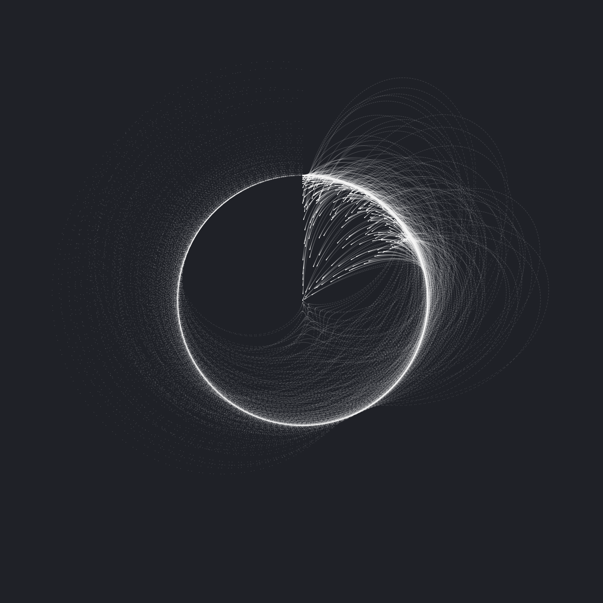
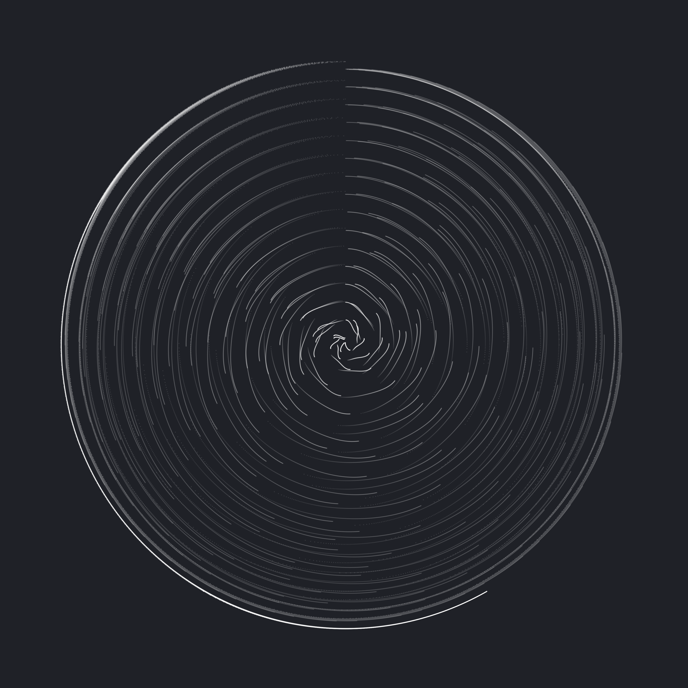
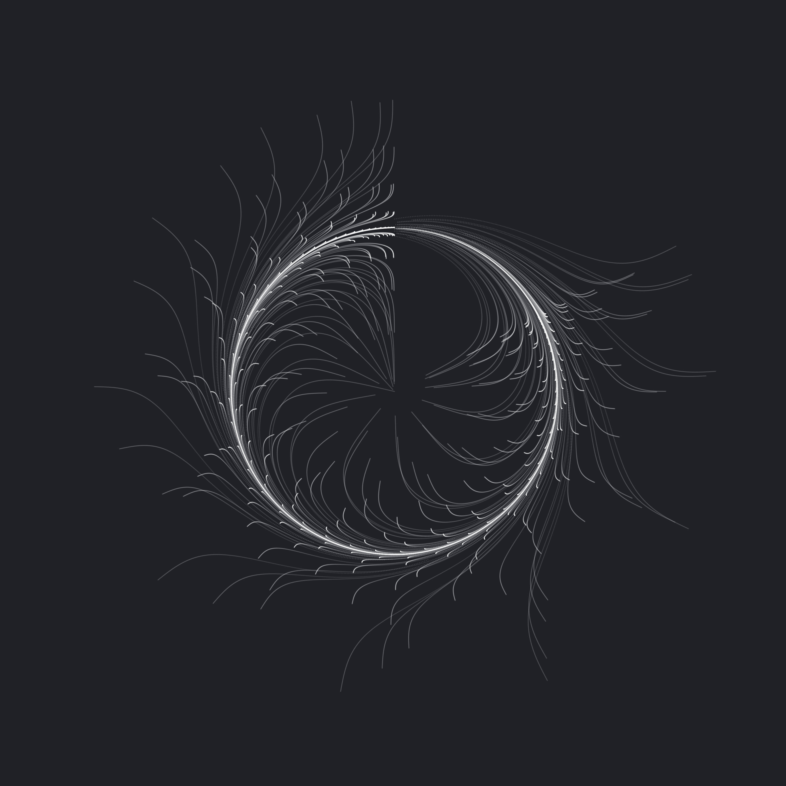
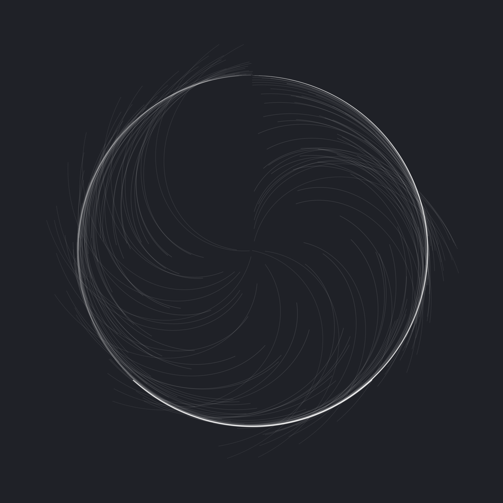
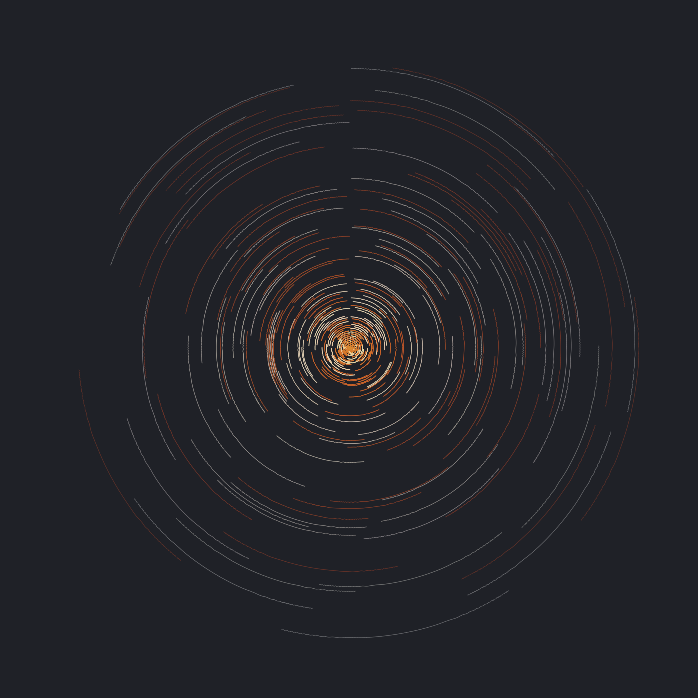

Generative art
I recently figured out how to make computer-generated art and have been giving it a few whirls. Below are some of the results.
1 / 6

2 / 6

3 / 6

4 / 6

5 / 6
6 / 6

These images were created with the aRtsy-package for R. They are licensed under CC BY-SA 4.0